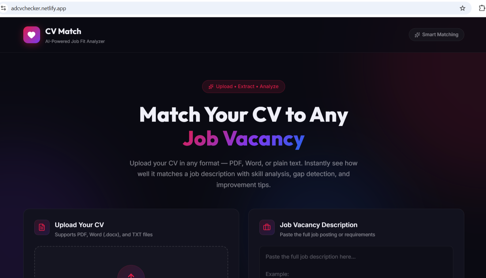
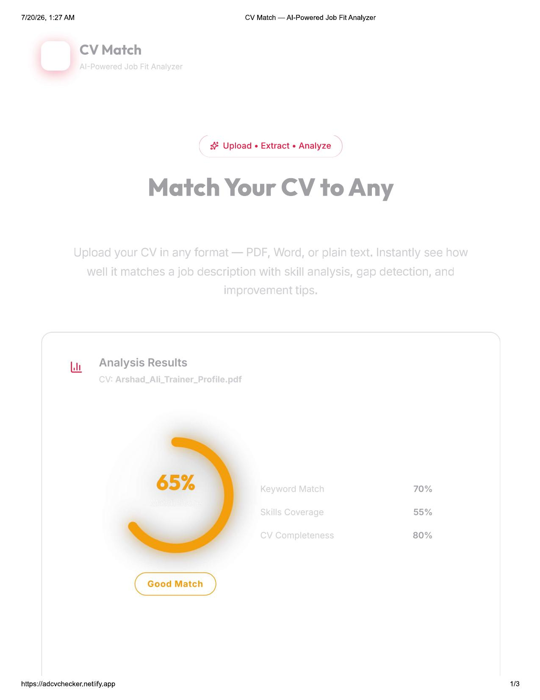

Case Study
AI CV Checker
A CV-to-job matching tool that went from a hackathon prototype that couldn't handle a file upload, to a live app real people have used and given feedback on.
The Problem
My hackathon version of this CV tool couldn't even take a file — you had to type everything in manually. That's not how anyone actually uses a CV checker.
What I Did
A few months later I rebuilt it from scratch: real file upload (PDF, Word, plain text), an AI model comparing the CV against a job description, and ATS-style correction suggestions — missing keywords, formatting fixes. Both versions were built to learn, not to ship a finished product, but I wanted the second one to actually work end-to-end, not just demo.
How It Works Now
User uploads a CV and pastes a job description → text is extracted from the file → the extracted text plus job description is sent to an AI model for comparison → the model checks keyword/skill overlap, missing qualifications, and experience alignment → it returns a match score, a skills matrix, and improvement tips.


What Came of It
It's live at adcvchecker.netlify.app. I shared it with people around me for honest feedback, and my AI & Data Science course mentor specifically liked the rebuild. If I keep building this, next up is login accounts, CV templates for different applicant types, and a real-time job-data connection so it matches against live openings instead of a pasted description.
View the code →Get In Touch
Want to see how I'd rebuild something like this for you?
Contact me →